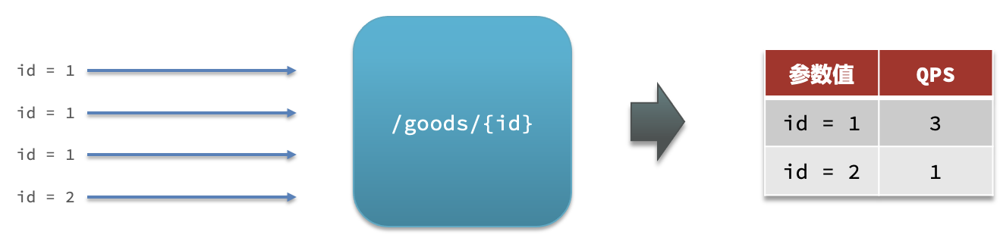
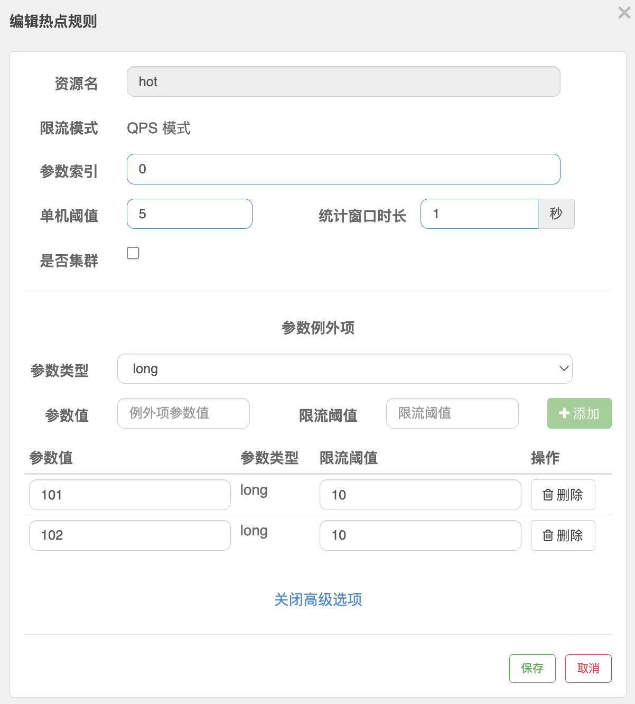

「Sentinel - 4」-- 热点参数限流
热点参数限流
热点参数规则
热点参数规则（ParamFlowRule）类似于流量控制规则（FlowRule）：
| 属性 | 说明 | 默认值 |
|---|---|---|
| resource | 资源名，必填 | |
| count | 限流阈值，必填 | |
| grade | 限流模式 | QPS 模式 |
| durationInSec | 统计窗口时间长度（单位为秒），1.6.0 版本开始支持 | 1s |
| controlBehavior | 流控效果（支持快速失败和匀速排队模式），1.6.0 版本开始支持 | 快速失败 |
| maxQueueingTimeMs | 最大排队等待时长（仅在匀速排队模式生效），1.6.0 版本开始支持 | 0ms |
| paramIdx | 热点参数的索引，必填，对应 SphU.entry(xxx, args) 中的参数索引位置 |
|
| paramFlowItemList | 参数例外项，可以针对指定的参数值单独设置限流阈值，不受前面 count 阈值的限制。仅支持基本类型和字符串类型 |
|
| clusterMode | 是否是集群参数流控规则 | false |
| clusterConfig | 集群流控相关配置 |
我们可以通过 ParamFlowRuleManager 的 loadRules 方法更新热点参数规则，下面是一个示例：
1 | ParamFlowRule rule = new ParamFlowRule(resourceName) |
热点限流
何为热点？热点即经常访问的数据。很多时候我们希望统计某个热点数据中访问频次最高的 Top K 数据，并对其访问进行限制。比如：
- 商品 ID 为参数，统计一段时间内最常购买的商品 ID 并进行限制
- 用户 ID 为参数，针对一段时间内频繁访问的用户 ID 进行限制
热点参数限流会统计传入参数中的热点参数，并根据配置的限流阈值与模式，对包含热点参数的资源调用进行限流。热点参数限流可以看做是一种特殊的流量控制，仅对包含热点参数的资源调用生效。

Sentinel 利用 LRU 策略统计最近最常访问的热点参数，结合令牌桶算法来进行参数级别的流控。
基本使用
要使用热点参数限流功能，需要引入以下依赖：
1 | <dependency> |
然后为对应的资源配置热点参数限流规则，并在 entry 的时候传入相应的参数，即可使热点参数限流生效。
注：若自行扩展并注册了自己实现的
SlotChainBuilder，并希望使用热点参数限流功能，则可以在 chain 里面合适的地方插入ParamFlowSlot。
那么如何传入对应的参数以便 Sentinel 统计呢？我们可以通过 SphU 类里面几个 entry 重载方法来传入：
1 | public static Entry entry(String name, EntryType type, int count, Object... args) throws BlockException |
其中最后的一串 args 就是要传入的参数，有多个就按照次序依次传入。比如要传入两个参数 paramA 和 paramB，则可以：
1 | // paramA in index 0, paramB in index 1. |
注意：若 entry 的时候传入了热点参数，那么 exit 的时候也一定要带上对应的参数（exit(count, args)），否则可能会有统计错误。正确的示例：
1 | Entry entry = null; |
对于 @SentinelResource 注解方式定义的资源，若注解作用的方法上有参数，Sentinel 会将它们作为参数传入 SphU.entry(res, args)。比如以下的方法里面 uid 和 type 会分别作为第一个和第二个参数传入 Sentinel API，从而可以用于热点规则判断：
1 |
|
Sentinel-Dashboard热点限流配置
热点规则
热点参数限流对默认的SpringMVC的Controller层资源无效，如果需要使用热点规则，需要使用 @SentileResource 注解进行单独标识。
热点参数限流是分别统计参数值相同的请求数，判断是否超过QPS阈值。
如上图，有请求goods/{id}的资源，其中id是热点参数，其值有两种 1,3；如果需要对请求参数id=1进行限流，则需要进行热点参数限流：

在热点参数限流的高级选项中，可以对部分参数进行例外配置：
结合上一个配置，这里的含义是对索引值为0号（即请求资源时的第一个参数）的long类型参数限流，每1秒相同参数的QPS不能超过5，有两个例外：
- 如果参数值是100，则每1秒允许的QPS为10；
- 如果参数值是101，则每1秒允许的QPS为10；
参考文档：
 微信
微信